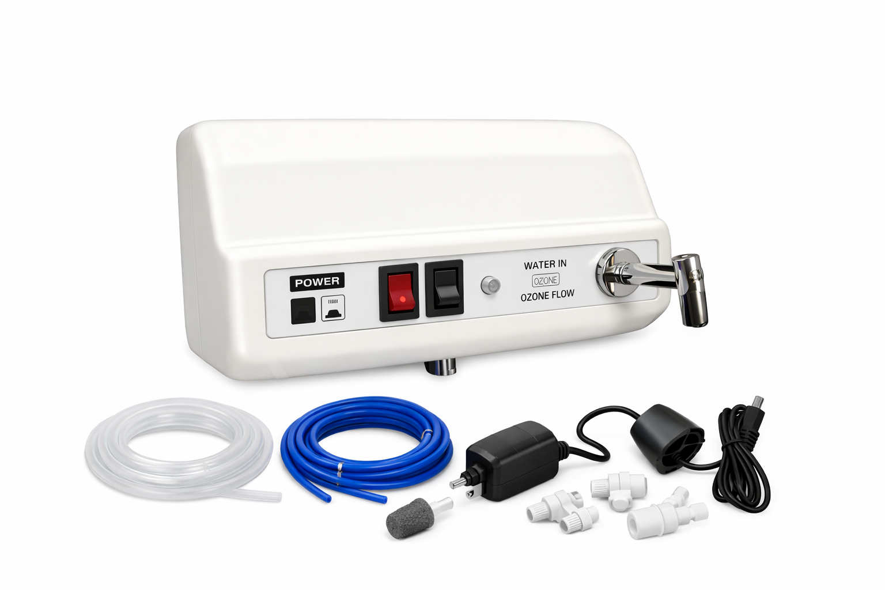
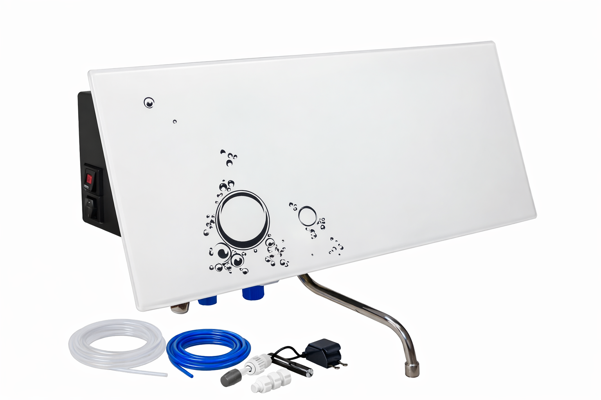
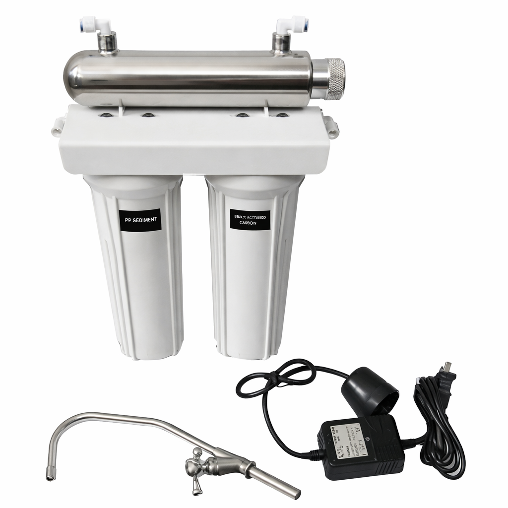
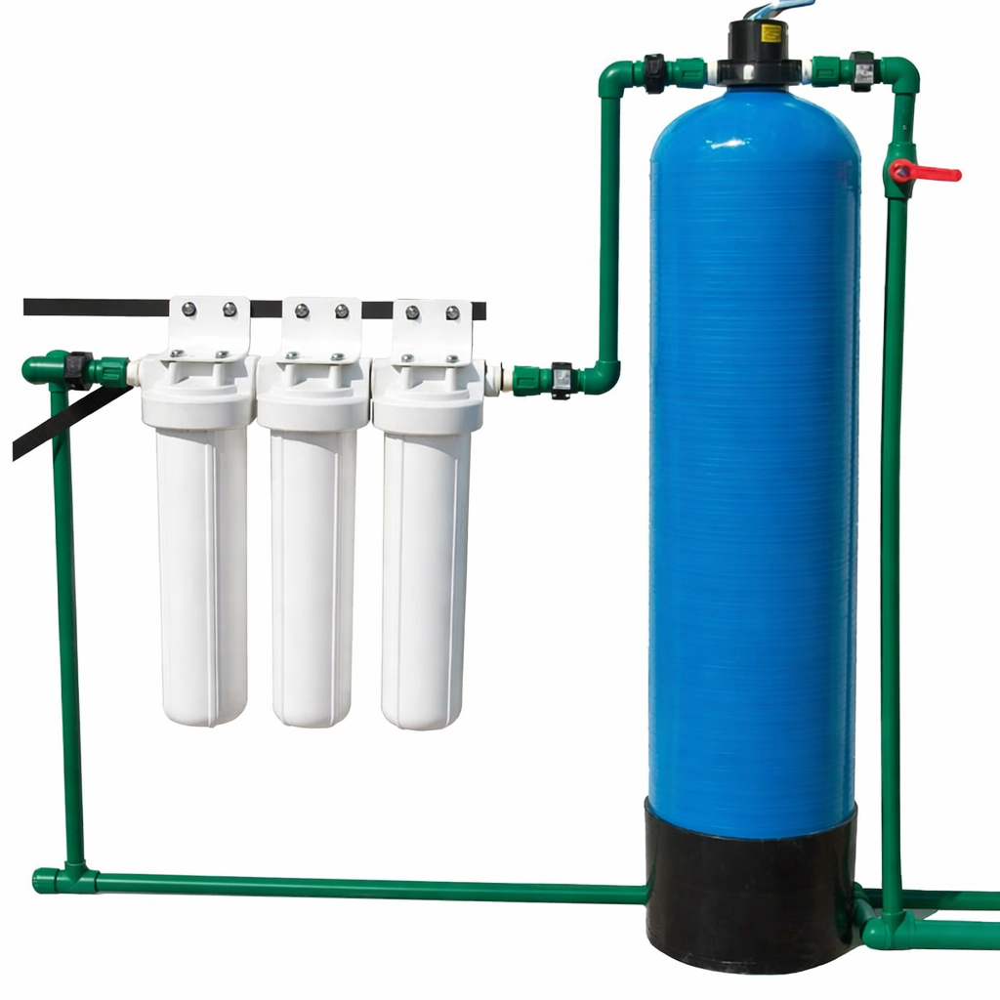

Equipos para cada necesidad
Conoce nuestra línea de soluciones profesionales para obtener agua más limpia y segura.

Ósmosis Inversa
Ideal para hogares, oficinas y negocios que buscan agua de excelente calidad.

Ozono Acrílico
Tecnología de ozono para desinfección de agua, alimentos y superficies.

Ozono Vitro
Equipo compacto para una desinfección eficiente mediante ozono.

Filtro UV
Elimina microorganismos utilizando tecnología de luz ultravioleta.

Filtros Industriales
Soluciones para empresas, comercios y procesos industriales.

Purificadora de Agua
Equipos completos para purificación profesional de agua potable.